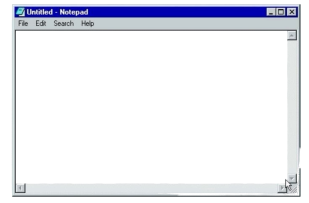
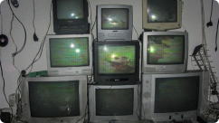

Наша деятельность включает:
A.R.I.S. Foundation
ARIS является независимой международной организацией, специализирующейся на изучении редких пространственных, физических и когнитивных аномалий.
С момента основания в 1968 году Фонд занимается документированием и анализом явлений, не поддающихся объяснению в рамках существующих научных моделей.

Наша деятельность включает:

На сегодняшний день виртуальные исследовательские подразделения Фонда функционируют в 18 странах и обеспечивают круглосуточное наблюдение за объектами повышенного интереса.